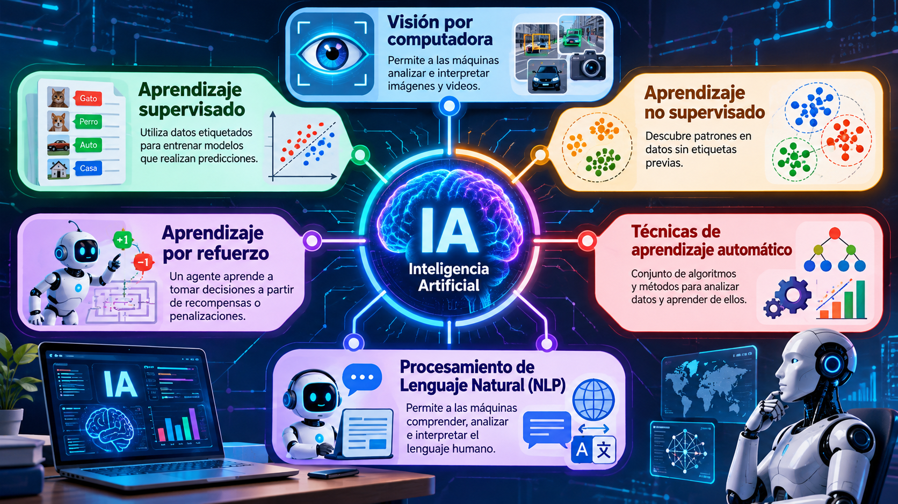

Bienvenido al mundo de la Inteligencia Artificial
La Inteligencia Artificial (IA) es un campo de la computación que desarrolla sistemas capaces de realizar tareas que normalmente requieren capacidades humanas, como reconocer imágenes, comprender textos, identificar patrones y apoyar la toma de decisiones. Para lograrlo, combina datos, algoritmos, modelos matemáticos y capacidad de cómputo.
La IA no es una única tecnología: reúne diferentes áreas y enfoques que se complementan. Algunos sistemas aprenden a partir de ejemplos etiquetados; otros descubren grupos o relaciones en datos sin etiquetas, mientras que otros aprenden mediante la interacción con un entorno. También existen técnicas para interpretar imágenes y procesar el lenguaje humano.
Conoce las áreas principales

Visión por computadoraAnaliza imágenes y videos para identificar objetos, escenas o patrones. Explorar área → |

Aprendizaje supervisadoAprende con ejemplos que incluyen una respuesta conocida. Explorar área → |

Aprendizaje no supervisadoBusca estructuras y agrupaciones en datos sin etiquetas previas. Explorar área → |

Aprendizaje por refuerzoAprende estrategias mediante acciones y recompensas. Explorar área → |

Técnicas de aprendizaje automáticoReúne algoritmos para construir modelos a partir de datos. Explorar área → |
Procesamiento del lenguaje naturalTrabaja con textos y lenguaje humano, escrito o hablado. Explorar área → |
La IA en contexto
Las aplicaciones de IA aparecen en la salud, la educación, la industria, el transporte, la seguridad y los servicios digitales. Su uso responsable requiere revisar la calidad de los datos, la privacidad, los posibles sesgos y las consecuencias de las decisiones automatizadas.
Este portal presenta conceptos introductorios y ejemplos cotidianos para facilitar la comprensión de cada área. Selecciona una sección del menú para comenzar el recorrido.